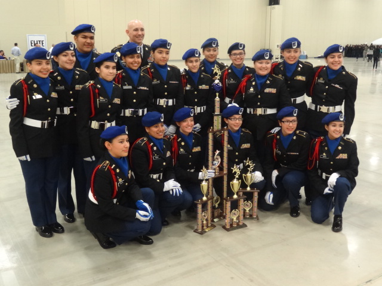
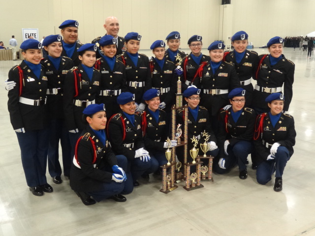

Drill Meets
| Meet | Day | USACC 5th Bde Drill Championships | Sat. Febuary 4, 2017 |
|---|---|
| Annual Restricted JROTC Drill Meet | Sat. March 11, 2017 |
| Royal Gorge Drill Meet (Nationals) | Sat. April 1, 2017 |
| Rocky Mountain Regional Drill Meet | Sat. April 15, 2017 |
 

This is the Abraham Lincoln High School's Honor Platoon. The team is lead by team commander, Lietutenant Colonel, Montse Corona. She has been the team commander for two years in a row. As well as leading the team to national twice in the two years she has been the commander.
If you aren’t familiar with what Honor Platoon is, it’ a choreographed performance that is lead by a team commander. Some may say it’s similar to a cheerleader’s performance but Honor Platoon, also known as HP, is a stiffer and more in sync performance. It involves beats that is created by each team using stomps, claps, and anything that can be used to make noise with your body.
Most schools if not all, that have jrotc have an HP. They compete in different drill meets that can then qualify you to nations that are outside of state, like in California, Texas, Kentucky, Florida and other states. Drill meets are lead of an Inspection of the teams JROTC uniform, a performance which is called Exhibition, as well as Regulation.
With that said, the Abraham LIncoln first performed in RMR, Rocky Mountain drill meet, which is the last drill meet of the season. In April of 2015 they placed 1st qualified to go compete in San Antonio, Texas along with other school on the southwest states in February of 2016. From there, they got 5th place and qualified for nationals in Louisville, Kentucky in April the same year, but unfortunately they did not place high enough to be able to compete in Florida. The same thing happen this year of 2017 but placing 3rd in Texas. And again they qualified for Texas next year of 2018.
| Meet | Day | USACC 5th Bde Drill Championships | Sat. Febuary 4, 2017 |
|---|---|
| Annual Restricted JROTC Drill Meet | Sat. March 11, 2017 |
| Royal Gorge Drill Meet (Nationals) | Sat. April 1, 2017 |
| Rocky Mountain Regional Drill Meet | Sat. April 15, 2017 |